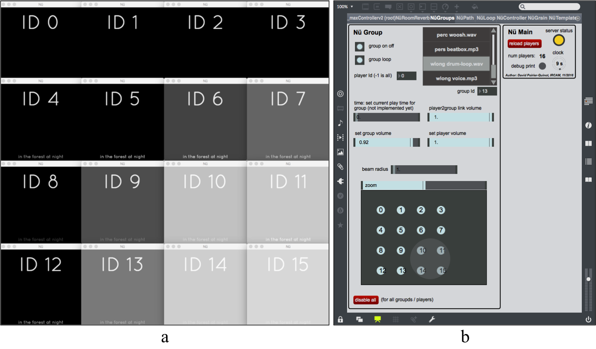
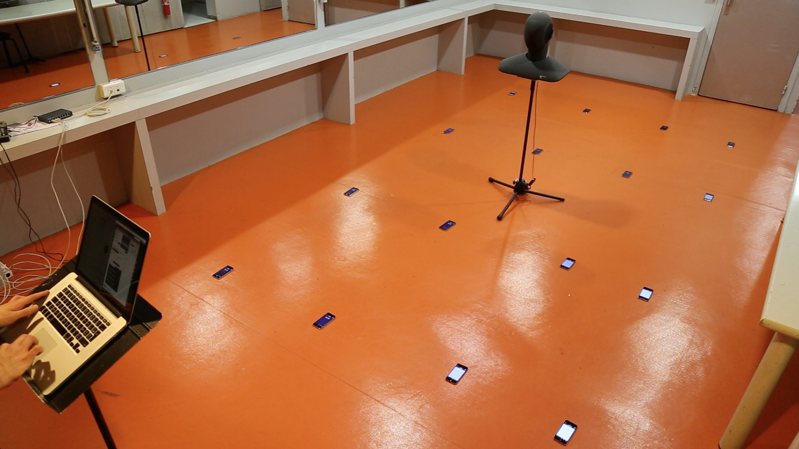

Soundworks Nü
The objective of the Nü framework, based on Soundworks, is to give composers control over the speakers of spectators smartphones during a performance. Connecting their devices to a web page broadcasted by the performer's laptop, spectators become part of the composition: from simple sound sources to active musicians. The performer can then control the behaviours of "Nü modules" via a Max/MSP based interface: modular units (distributed room reverb, granular synthesis, etc.) designed for live composition. Nü has been developed as part of the CoSiMa Project.
 
Install Node.js
Node.js or "npm" is a toolbox / framework / magic wizard for javascript & web developers, required to run Nü. Check the official Node.js installation guide.
Install Nü (master)
```sh git clone https://github.com/ircam-cosima/soundworks-nu.git soundworks-nu cd soundworks-nu npm install echo '## DEV ## working with develop version of soundworks even here, requires transpile' cd node_modules/soundworks npm run transpile cd ../.. echo '## DEV ##' npm run watch ```How to use
- Open Max/MSP main patch `src/maxmsp/_maxControllerv2.maxpat`
- Start the server (see Install)
- Connect client to server (default: open your browser at 127.0.0.1:8000)
- Use Max/MSP patch to control client's behavior